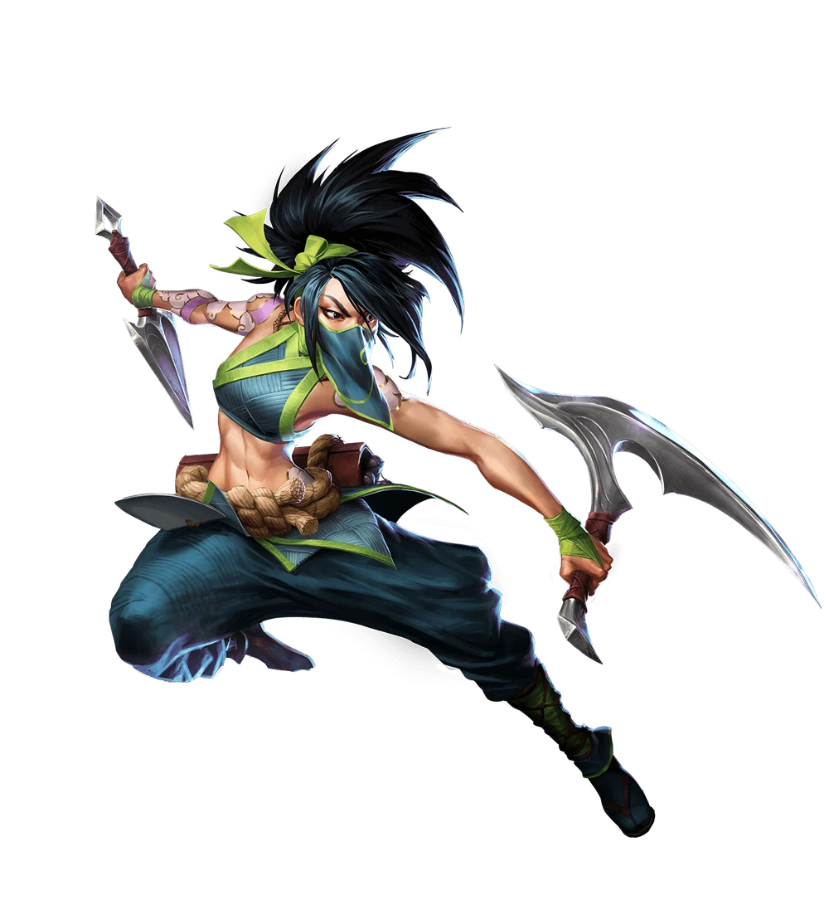

VISION SCORE
ACELERE E OTIMIZE SUAS ANÁLISES
ACESSE INFORMAÇÕES DETALHADAS SOBRE
Vision Score reúne em um só lugar as métricas que importam para equipes competitivas de League of Legends. Acompanhe a performance do seu time em campeonatos, identifique padrões e tome decisões estratégicas com base em dados.
